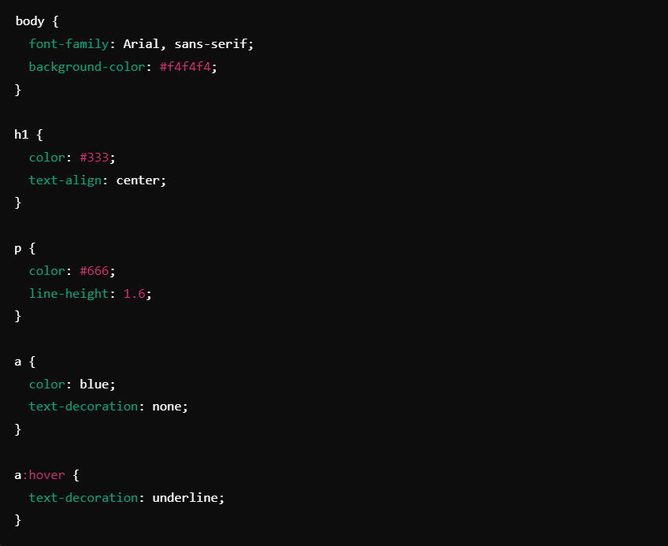
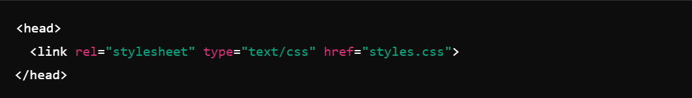
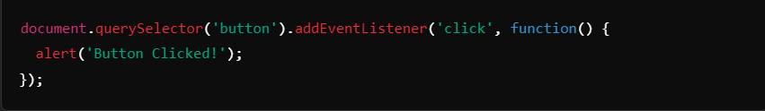

From Zero to Hero: Start Your Web Development Journey with HTML, CSS, and JavaScript
Premsai - 12 min read - Sep 14, 2024
Dive into the world of web development with the three core technologies that power the internet.
Introduction
In the world of technology, web development is an essential and high-demand skill. Whether you're a complete beginner or someone who has dabbled in coding, learning web development is a powerful way to unlock new opportunities. With the right foundation, you can build anything from personal blogs to complex web applications.
In this article, we'll explore how you can start your journey into web development by mastering three core technologies: HTML, CSS, and JavaScript. These are the building blocks of web design and development, and once you get comfortable with them, you'll be well on your way to becoming a web development hero.
What is Web Development?
Web development involves creating and maintaining websites or web applications. It’s divided into two categories:
- Front-end development: This is what the user sees and interacts with on a website. The three core technologies for front-end development are HTML, CSS, and JavaScript.
- Back-end development: This is the behind-the-scenes work that makes websites function, involving databases, servers, and server-side languages like Python, PHP, and Node.js.
Before diving deeper into back-end development, it’s crucial to get a strong grip on front-end technologies. Now, let’s break down each of these core technologies and how they work together.
HTML (HyperText Markup Language) - The Skeleton of a Web Page
HTML is the foundation of any website. It provides the structure and content of the webpage, defining what elements appear on the screen. In simpler terms, HTML is the skeleton of a web page that gives meaning to different types of content such as text, images, videos, and links.
Key Concepts in HTML:
- Tags: HTML uses elements defined by tags to structure the content. Tags are wrapped in angle brackets <>, such as <p> for paragraphs, <a> for links, and <h1> for headings.
- Attributes: These are additional information added to a tag, like src in an <img> tag, which specifies the image source.
- Semantic HTML: This is the practice of using HTML tags that convey the meaning of the content, such as <header>, <footer>, <article>, and <section>.
Basic HTML Example:

CSS (Cascading Style Sheets) - The Design and Layout
CSS is what makes your website look visually appealing. While HTML provides the structure, CSS adds styling such as colors, fonts, layouts, and spacing. With CSS, you can turn a plain HTML document into a beautiful and responsive web page.
Key Concepts in CSS:
- Selectors: These are patterns used to select the elements you want to style, like body, h1, or p. You can also target classes (.class-name) and IDs (#id-name).
- Box Model: Every HTML element is treated as a rectangular box by CSS. Understanding the box model (content, padding, border, and margin) is essential for creating layouts.
- Flexbox & Grid: These are powerful layout models for creating responsive designs that adapt to different screen sizes.
Basic CSS Example:
CSS is linked to the HTML file through a <link> tag in the head section:
JavaScript - The Dynamic and Interactive Behavior
JavaScript is the programming language that brings interactivity and dynamic functionality to your website. While HTML gives structure and CSS styles the page, JavaScript makes your website come to life by responding to user actions, manipulating the DOM (Document Object Model), and handling events like clicks and keypresses.
Key Concepts in JavaScript:
- Variables: Store data values, e.g., let name = 'John';.
- Functions: Blocks of code that perform a task, e.g., function greet() { alert('Hello!'); }.
- DOM Manipulation: JavaScript can modify HTML and CSS by selecting elements and changing their content or styles dynamically.
- Event Handling: You can listen for events (clicks, form submissions, etc.) and execute functions in response.
Basic JavaScript Example:
Resources to Learn HTML, CSS, and JavaScript
Starting your web development journey can be overwhelming, but there are plenty of resources available to help you. Some great places to start include:
- W3Schools: A beginner-friendly platform to learn the basics of HTML, CSS, and JavaScript.
- MDN Web Docs: Mozilla’s comprehensive resource for web developers, covering everything from documentation to tutorials.
- freeCodeCamp: Offers interactive coding lessons and projects to practice your skills.
- codecademy: Provides interactive courses in web development and other programming languages.
Conclusion
Starting your web development journey with HTML, CSS, and JavaScript is an exciting first step towards becoming a web development hero. Mastering these technologies will allow you to create responsive, beautiful, and interactive websites. With consistent practice and the help of online resources, you’ll be able to develop a strong foundation and tackle more advanced topics such as back-end programming, frameworks, and full-stack development.
So, grab your text editor, and start coding! Your journey from zero to hero in web development begins today.
Comments